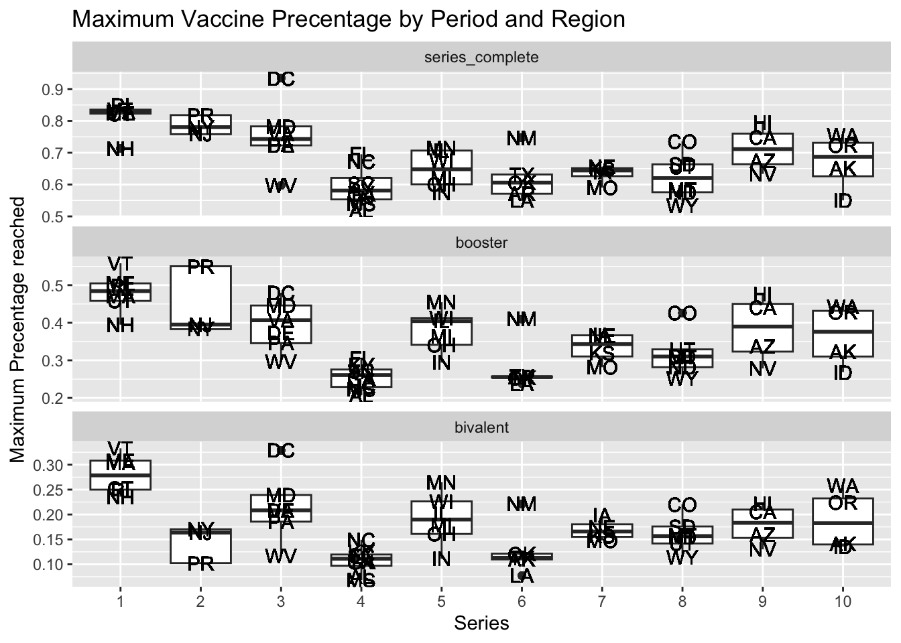

Add a label to the x and y axes when not obvious what they are showing.
Think about transformations that convey the message in clearer fashion.
Measles
Load the dslabs package and figure out what is in the us_contagious_diseases dataset. Create a data frame, call it avg, that has a column for year, and a rate column containing the cases of Measles per 10,000 people per year in the US. Because we start in 1928, exclude Alaska and Hawaii. Make sure to take into account the number of weeks reporting each year. If a week was not report, it should not be included in the calculation of the rate.
library(tidyverse)
── Attaching core tidyverse packages ──────────────────────── tidyverse 2.0.0 ──
✔ dplyr 1.1.3 ✔ readr 2.1.4
✔ forcats 1.0.0 ✔ stringr 1.5.0
✔ ggplot2 3.4.3 ✔ tibble 3.2.1
✔ lubridate 1.9.2 ✔ tidyr 1.3.0
✔ purrr 1.0.2
── Conflicts ────────────────────────────────────────── tidyverse_conflicts() ──
✖ dplyr::filter() masks stats::filter()
✖ dplyr::lag() masks stats::lag()
ℹ Use the conflicted package (<http://conflicted.r-lib.org/>) to force all conflicts to become errors
Use the data frame avg to make a trend plot showing the cases rate for Measles per year. Add a vertical line showing the year the Measles vaccines was introduced. Write a short paragraph describing the graph to someone you are urging to take the Measles vaccines.
avg|>ggplot()+geom_line(aes(x=year,y=rate))+xlab("Year") +ylab("Cases rate for Measles") +ggtitle("Cases rate for Measles per year")+geom_vline(xintercept =1963, color ="red", linetype ="dashed")
Ans: According to the graph above, we can tell that after 1963 when the Measles vaccines were introduced, the Measles case rate per year dramatically dropped and has maintained a low rate since 1967. This indicates that taking Measles vaccines can prevent people from being infected with Measles and thus taking Measles vaccines is important.
Is the pattern observed above the same for each state? Add a grey trend line for each state to the plot above. Use a transformation that keeps the high rates from dominating the figure.
us_contagious_diseases|>filter(disease=="Measles"& weeks_reporting>0)|>mutate(rate=count*52/weeks_reporting/population*10^4)|>ggplot() +geom_line(aes(x=year,y = rate, group = state), color ="grey", alpha =0.5) +geom_line(data = avg, aes(x = year, y = rate)) +## avg was defined in previous exercisescale_y_continuous(trans ="sqrt") +geom_vline(xintercept =1963, color ="red", linetype ="dashed")+xlab("Year") +ylab("Cases rate for Measles") +ggtitle("State vs. Nationwide Cases rate for Measles per year")
In the plot above we can’t tell which state is which curve. Using color would be challenging as it is hard if not impossible to find 48 colors we humans can distinguish. To make a plot where you can compare states knowing which is which, use one of the axis for state and the other for year, and then use hue or intensity as a visual cue for rates. Use a sqrt transformation to avoid the higher rates taking up all the color scale. Use grey to denote missing data. Order the states based on their highest peak.
custom_palette <-c("#FF6800", "#C70039", "#900C3F", "#581845")us_contagious_diseases|>filter(!state %in%c("Hawaii","Alaska")& disease=="Measles")|>mutate(rate=count*52/weeks_reporting/population*10^4,state=reorder(state,rate,max,na.rm =TRUE))|>ggplot(aes(x = year, y = state, fill=rate))+scale_fill_gradientn(colors = custom_palette, trans ="sqrt") +geom_tile(color="grey")+labs(x ="Year", y ="State", title ="Measles Cases Rate by State and Year")+geom_vline(xintercept =1963, color ="blue", linetype ="dashed")
COVID-19
The csv file shared here includes weekly data on SARS-CoV-2 reported cases, tests, COVID-19 hospitalizations and deaths, and vaccination rates by state.
Import the file into R without making a copy on your computer.
Examine the dataset.
Write a sentence describing each variable in the dataset.
Rows: 9853 Columns: 15
── Column specification ────────────────────────────────────────────────────────
Delimiter: ","
chr (2): state, state_name
dbl (13): population, region, mmwr_year, mmwr_week, cases, tests, hosp, deat...
ℹ Use `spec()` to retrieve the full column specification for this data.
ℹ Specify the column types or set `show_col_types = FALSE` to quiet this message.
summary(dat)
state state_name population region
Length:9853 Length:9853 Min. : 576851 Min. : 1.000
Class :character Class :character 1st Qu.: 1839106 1st Qu.: 3.000
Mode :character Mode :character Median : 4505836 Median : 5.000
Mean : 6446581 Mean : 5.267
3rd Qu.: 7705281 3rd Qu.: 8.000
Max. :39538223 Max. :10.000
mmwr_year mmwr_week cases tests
Min. :2020 Min. : 1.00 Min. : 0 Min. : 0
1st Qu.:2020 1st Qu.:13.00 1st Qu.: 1251 1st Qu.: 630628
Median :2021 Median :25.00 Median : 4084 Median : 2146411
Mean :2021 Mean :25.48 Mean : 11253 Mean : 5828370
3rd Qu.:2022 3rd Qu.:37.00 3rd Qu.: 11117 3rd Qu.: 6671930
Max. :2023 Max. :53.00 Max. :790954 Max. :114042927
NA's :857 NA's :5018
hosp deaths_underlying_cause deaths_multiple_causes
Min. : 0.0 Min. : 0 Min. : 0.0
1st Qu.: 114.0 1st Qu.: 19 1st Qu.: 23.0
Median : 318.0 Median : 45 Median : 53.0
Mean : 751.1 Mean : 125 Mean : 135.9
3rd Qu.: 810.0 3rd Qu.: 122 3rd Qu.: 133.0
Max. :16663.0 Max. :5010 Max. :5267.0
NA's :1483 NA's :2256 NA's :1733
deaths_prov series_complete booster bivalent
Min. : 0.0 Min. : 3 Min. : 0 Min. : 0
1st Qu.: 22.0 1st Qu.: 725398 1st Qu.: 0 1st Qu.: 0
Median : 53.0 Median : 2019747 Median : 493446 Median : 0
Mean : 135.6 Mean : 3492821 Mean : 1267562 Mean : 231838
3rd Qu.: 132.0 3rd Qu.: 4237943 3rd Qu.: 1714328 3rd Qu.: 99655
Max. :5267.0 Max. :29588939 Max. :17459544 Max. :8140724
NA's :1709 NA's :3301 NA's :3301 NA's :3301
Ans: state: State, character, is the abbreviation form of state_name, having 52 unique values and 9853 lengths. state_name: state_name, character, is the full name form of state, having 52 unique values and 9853 lengths. population: population, double, is the number of population in a state. region: region, double, is a number from 1 to 10. mmwr_year: year, double, is the year of SARS-CoV-2 reported cases, tests, COVID-19 hospitalizations and deaths, and vaccination rates mmwr_week: week, double, is the week of SARS-CoV-2 reported cases, tests, COVID-19 hospitalizations and deaths, and vaccination rates cases: cases, double, is the number of SARS-CoV-2 reported cases. tests: tests, double, is the number of SARS-CoV-2 reported tests. hosp: COVID-19 hospitalizations, double, is the number of COVID-19 hospitalizations. deaths_underlying_cause: double, is the number of deaths caused by underlying reasons. deaths_multiple_causes: double, is the number of deaths caused by multiple reasons. deaths_prov: double, is the number of deaths proved. series_complete: double, is the number of series completed. booster: double, is the number of booster taken. bivalent: double, is the number of bivalent taken.
One of these columns could benefit from being a factor. Identify the column and convert it to factor.
dat <-mutate(dat, region =factor(region))
Rather than providing a date, the dataset provides MMWR year and week. Read this document and write a function to convert these to the start of the MMWR week in ISO-8601.
library("lubridate")mmwr_to_date <-function(mmwr_year, mmwr_week) { first_day <-floor_date(make_date(mmwr_year, 1, 4) , unit ="week") date <- first_day +weeks(mmwr_week -1) return(date)}
Add a columns start_date and end_date with the start and end of the MMWR week. Confirm that it worked by computing the MMWR week and year for both start and end date and comparing it to the MMWR week and year provided.
COVID-19 is an extremely infectious disease. Its first outbreak was in late 2020. The first vaccine was introduced in December 14th, 2020 and the cases for COVID-19 has dropped gradually until the middle of 2021. The second outbreak was way larger in the beginning of 2022 with a highest case rate per week of over 3000 in region 1 area. The rate dropped dramatically in a few months and remained almost constant since then.
The number of cases depends on testing capacity. Note that during the start of the pandemic, when we know many people died, there are not that many cases reported. Also notice somewhat large variability across states that might not be consistent with actual prevalence. The tests columns provides the cumulative number of tests performed by the data represented by the week. This data is not official CDC data. It was provided by Johns Hopkins Coronavirus Resource Center. Before using the data, explore the data for each state carefully looking for potential problems.
For each state compute and plot the number of tests perforemd each week. Look at the plot for each state and look for possible problems. No need to make this plot pretty since we are just using it for data exploration. Report any inconsistencies if any.
dat|>arrange(end_date)|>group_by(state)|>mutate(tests=diff(c(0,tests)))|>ggplot()+geom_line(aes(end_date,tests))+facet_wrap(~state,scales="free_y")+xlab("Date") +ylab("Testing cases per week") +ggtitle("Testing cases per week by State")
negstate <- dat |>filter(!is.na(tests)) |>arrange(end_date) |>group_by(state) |>mutate(tests =diff(c(0,tests))) |>filter(tests <0)unique(negstate$state)
[1] "WY" "ME" "SD" "WV" "AK" "DC" "NV"
There are some inconsistencies. For example, states WY, ME, SD, WV, AK, DC and NV have negative vaulues in the above plots.
To see if the inconsistencies seen in the previous plot are a problem if we are only going to look at the total number of tests at the end, plot the cumulative tests for each of the states with inconsistencies and see if the results are sensible. Explain your answer in 1-2 sentences.
In the cumulative plot above, we can see in all of the seven states, there is a drop. This should not be having in a cumulative plot since cumulative plot is supposed to increase or maintain the same value as time passes.
JHU stopped reporting some time in 2021. What was that date? Show the day in the format September 18, 2022.
As shown in the table above, JHU stopped reporting at December 25, 2021 in all states.
Compute the number of tests per capita for the last day JHU reported these statistics. Make a boxplot of these values for each region and include the state level data with the state abbreviation as a label. Write a sentences describing these differences you see and how this could affect our interpretation of differences in cases rates across states.
last_day <-as_date("2021-1-2") dat |>filter(end_date == last_day) |>group_by(region)|>ggplot() +geom_boxplot(aes(x=region, y=tests/population)) +geom_text(aes(x=region, y=tests/population,label = state)) +labs(x ="Region", y ="Test per capita", title ="SARS-COV2 tests per person")
We plotted a graph showing tests per capita in different regions and states. The box plot grouped every region and showed the tests rate in different states that are in the same region. From the graph, we can see there is a difference among regions from 1 to 10. For example, region 1 has the highest test rates on average and region 7 has the lowest test rates on average. Some of the states show too high or too low test rates in the region and become the “outlier” of a region.
Although JHU stopped collecting testing data from the states, the CDC collected data from a few laboratories. We provide these date in this url.
Import the data into R without downloading the file.
Make sure that you create a data frame with a column with dates in Dates format and tests as numbers.
Rows: 183 Columns: 2
── Column specification ────────────────────────────────────────────────────────
Delimiter: " "
chr (2): date, tests
ℹ Use `spec()` to retrieve the full column specification for this data.
ℹ Specify the column types or set `show_col_types = FALSE` to quiet this message.
class(tests$date)
[1] "character"
class(tests$tests)
[1] "character"
tests<-tests|>mutate(date=mdy(date),tests=parse_number(tests)) #the tests=parse_num no sure
Plot the tests per week to see the trend in time. Write a sentence of the pattern you see.
tests|>ggplot()+geom_line(aes(x=date,y=tests)) +xlab("Date") +ylab("Test Cases for COVID-19 in this week") +ggtitle("Test Cases for COVID-19 per week")
Ans: At the first outbreak of COVID-19 in late 2020, testing cases reached a peak. After that, number of people who took COVID-19 test dropped until mid 2021. Then the number of testing cases increased since mid 2021 and at the second outbreak of COVID-19 in the beginning of 2022, testing cases reached another high point. Since then, the number of testing cases dropped continuously till now.
At the start of the pandemic there were few tests conducted and now we are also seeing a drop.
The analysis on tests points to cases as not being a good measure of the state of the pandemic. Remake the trend plot but using death rates instead of cases rates. Write a sentence on how this plot better shows about the start of the pandemic that the cases plot did not.
dat|>filter(is.na(deaths_prov)==FALSE)|>group_by(end_date)|>mutate(deathrate=deaths_prov/population*10^5)|>mutate(avgdeathrate=sum(deaths_prov)/sum(population)*10^5)|>ggplot()+geom_line(aes(x=end_date,y=deathrate),color="grey") +geom_line(aes(x=end_date,y=avgdeathrate),color="red")+xlab("Date") +ylab("Deaths Rate for COVID-19") +ggtitle("Death Cases Rate for COVID-19 in a week")
Ans: Death cases can better reflect the start of the pandemic since COVID-19 has a strong and quick adverse impact on the elderly so we can tell it is the advent of pandemic when a sudden increase occurred. However, testing cases normally will increase only after the start of the pandemic when population realized the existence of COVID-19.
We see that the highest death rates were actually at the start of the pandemic and that is was particularly bad in the northeast.
We want to examine the percent of the population that completed the first series of vaccines, received the booster, and received the bivalent booster, respectively. First run this line of code and examine what it does.
Ans: This code firstly reshape the three types of vaccines data from a wide format to a column called series and point their value to a new column called percent. Then the code ignore the row whose percent is NA, calculate the percent in population and store them to the column percent. In addition, the series column has three factor values.
Then make a plot showing the percent of population vaccination for each state. Use color to represent region.
Show the dates on the x axis with the month abbreviation and year.
Place the three plots vertically, on top of each other.
Show percentages on the y axis. Hint: use scales::percent.
library(gridExtra)
Attaching package: 'gridExtra'
The following object is masked from 'package:dplyr':
combine
tmp$date_formatted <-format(tmp$end_date, "%b %Y")p1<-tmp|>filter(series=="series_complete" )|>ggplot()+geom_line(aes(x=end_date,y=percent,group=state,color=region))+ggtitle("Booster Vaccines taken percent")+scale_y_continuous(labels = scales::percent_format(scale =100))p2<-tmp|>filter(series=="booster" )|>ggplot()+geom_line(aes(x=end_date,y=percent,group=state,color=region))+ggtitle("Booster Vaccines taken percent")+scale_y_continuous(labels = scales::percent_format(scale =100))p3<-tmp|>filter(series=="bivalent" )|>ggplot()+geom_line(aes(x=end_date,y=percent,group=state,color=region))+ggtitle("Booster Vaccines taken percent")+scale_y_continuous(labels = scales::percent_format(scale =100))grid.arrange(p1, p2, p3, ncol =1)
For each series used to make the trend plot for the three series, make a boxplot showing the maximum percentage reached by every state stratified by region. Let the range of the y axis adapt to the range of each series.
tmp|>filter(series=="bivalent"& percent>0)
# A tibble: 1,924 × 7
state region population end_date series percent date_formatted
<chr> <fct> <dbl> <date> <fct> <dbl> <chr>
1 AK 10 733391 2022-09-03 bivalent 0.0000191 Sep 2022
2 AK 10 733391 2022-09-10 bivalent 0.00302 Sep 2022
3 AK 10 733391 2022-09-17 bivalent 0.0121 Sep 2022
4 AK 10 733391 2022-09-24 bivalent 0.0230 Sep 2022
5 AK 10 733391 2022-10-01 bivalent 0.0343 Oct 2022
6 AK 10 733391 2022-10-08 bivalent 0.0459 Oct 2022
7 AK 10 733391 2022-10-15 bivalent 0.0574 Oct 2022
8 AK 10 733391 2022-10-22 bivalent 0.0685 Oct 2022
9 AK 10 733391 2022-10-29 bivalent 0.0789 Oct 2022
10 AK 10 733391 2022-11-05 bivalent 0.0869 Nov 2022
# ℹ 1,914 more rows
tmp|>filter(series=="series_complete"& percent>0)
# A tibble: 6,552 × 7
state region population end_date series percent date_formatted
<chr> <fct> <dbl> <date> <fct> <dbl> <chr>
1 AK 10 733391 2020-12-19 series_complete 0.0000627 Dec 2020
2 AK 10 733391 2020-12-26 series_complete 0.0000941 Dec 2020
3 AK 10 733391 2021-01-02 series_complete 0.000155 Jan 2021
4 AK 10 733391 2021-01-09 series_complete 0.0114 Jan 2021
5 AK 10 733391 2021-01-16 series_complete 0.0185 Jan 2021
6 AK 10 733391 2021-01-23 series_complete 0.0274 Jan 2021
7 AK 10 733391 2021-01-30 series_complete 0.0422 Jan 2021
8 AK 10 733391 2021-02-06 series_complete 0.0745 Feb 2021
9 AK 10 733391 2021-02-13 series_complete 0.113 Feb 2021
10 AK 10 733391 2021-02-20 series_complete 0.141 Feb 2021
# ℹ 6,542 more rows
tmp|>filter(series=="booster"& percent>0)
# A tibble: 4,847 × 7
state region population end_date series percent date_formatted
<chr> <fct> <dbl> <date> <fct> <dbl> <chr>
1 AK 10 733391 2021-08-14 booster 0.000106 Aug 2021
2 AK 10 733391 2021-08-21 booster 0.00188 Aug 2021
3 AK 10 733391 2021-08-28 booster 0.00461 Aug 2021
4 AK 10 733391 2021-09-04 booster 0.00728 Sep 2021
5 AK 10 733391 2021-09-11 booster 0.0101 Sep 2021
6 AK 10 733391 2021-09-18 booster 0.0127 Sep 2021
7 AK 10 733391 2021-09-25 booster 0.0178 Sep 2021
8 AK 10 733391 2021-10-02 booster 0.0345 Oct 2021
9 AK 10 733391 2021-10-09 booster 0.0479 Oct 2021
10 AK 10 733391 2021-10-16 booster 0.0584 Oct 2021
# ℹ 4,837 more rows
tmp |>filter(percent>0)|>group_by(region, state,series)|>mutate(max_percentage =max(percent, na.rm =TRUE))|>ggplot(aes(x=region, y=max_percentage)) +geom_boxplot() +xlab("Series") +ylab("Maximum Precentage reached") +ggtitle("Maximum Vaccine Precentage by Period and Region")+facet_wrap(.~ series, scales ="free_y",ncol=1)+# Adapt y-axis range for each groupgeom_text(aes(label = state))

Use the plot above to define four periods: No vaccine, First vaccine, Booster, and Bivalent. Get the dates when each vaccine series starts (these don’t have to be exact). Create a version of your data frame with a column called period that keeps the period associated with the week contained in each row.
According to the output below, the start of no vaccine period is 2020-1-19, the start of first vaccine is 2020-12-13, the start of Booster is 2021-01-31, and the start of bivalent is 2022-08-28.
Define a new variable that stores the maximum vaccination percentage reached during each period. But for the first vaccine period use series_complete, for the booster period use the booster column, and for the bivalent period use the bivalent percentages. Remove data from the no vaccine period. The make a plot comparing the COVID-19 death rate to the percent vaccinated. Use color to denote region. You should produce three plots, each with it’s own axes range. Put the three plots in three entries of a 2x2 layout. Comment on what you observe.
maxvac <- tmp |>group_by(state, series) |>summarise(max_vaccination_rate =max(percent, na.rm =TRUE), .groups ='drop')death_rate_data <- mydat |>filter(period !="No_vaccine") |>filter(!is.na(deaths_prov)) |>group_by(state, period)|>summarise(deaths_total =sum(deaths_prov, na.rm =TRUE),population =first(population), weeks_total =n(),region =first(region),.groups ='drop' ) |>mutate(death_rate_avg_per_week = (deaths_total/ (population * weeks_total)) *100000 ) |>merge(maxvac, by.x =c("state", "period"), by.y =c("state", "series")) death_rate_data |>ggplot(aes(x = max_vaccination_rate, y = death_rate_avg_per_week, color = region)) +geom_text(aes(label = state)) +facet_wrap(.~period, scales ="free", nrow =2) +xlab("Max vaccination rate") +ylab("Covid-19 death rate every 100,000 person per week") +ggtitle("Max Vaccination Rate and Death Rate in three period") +scale_x_continuous(labels = scales::percent)
From the graph plotted, we can tell that there is a trend that the higher the max vaccination rate, the lower death rate on average.
Does population density have an effect on infections? Use the state.area predefined variable to add compute population density. Make a histogram and density plot of state densities. Note that you will have to add the geographical area for Puerto Rico and DC as it is not included in state.area
my.state.abb <-c(state.abb, "PR", "DC")my.state.area <-c(state.area, 5325, 69)popdens <- dat |>filter(end_date ==min(end_date)) |>select(state, population) |>mutate(area = my.state.area[match(state, my.state.abb)]) |>mutate(popdens = population / area) popdens |>ggplot(aes(popdens)) +geom_histogram(aes(y =after_stat(density)), bins =25, color ="black") +geom_density() +scale_x_log10() +labs(title ="Distribution of poplation density across states", x ="Population density", y ="Density")
Plot death rates versus density for the four periods defined above.